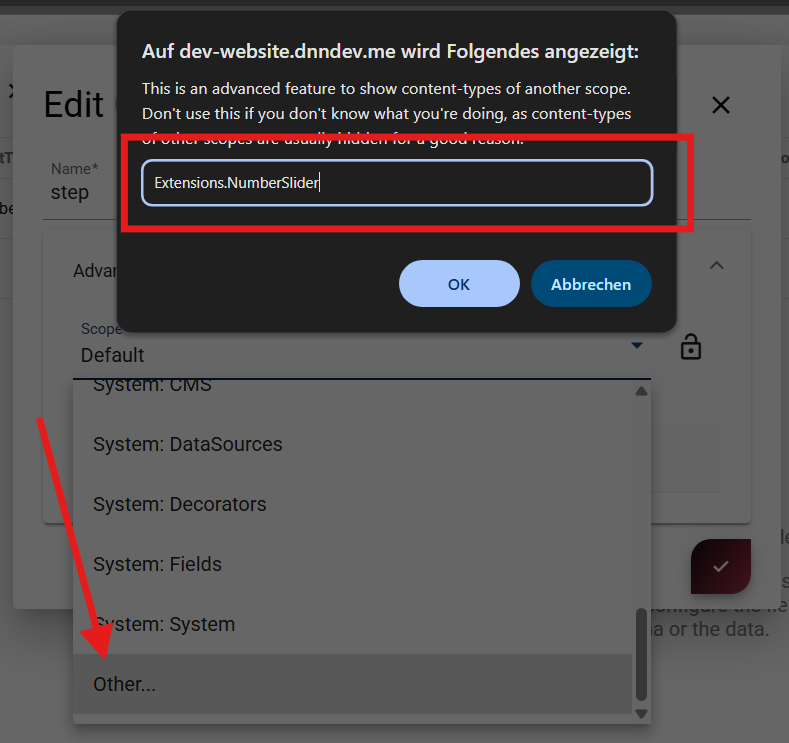

App Extensions - Visual Queries
Visual Query extensions package reusable queries as part of an App Extension.
Tip
Use this for query logic you want to reuse across apps.
How Visual Query Extensions Work
Visual queries are stored as entities, not files. You create them like normal app queries and include them during extension export.
Naming Recommendation
We highly recommend that you give the queries a clear and unique name,
such as {ExtensionName}.{QueryName} to avoid conflicts with other queries in the App.
Avoid spaces and special characters to simplify API usage.
Checklist
- Visual Queries are stored as Entities, not files
- They must exist in the App before exporting the extension
- Only queries explicitly marked as used will be included in the package
- Naming should be unique to avoid collisions across Apps
Include in the Package Definition
Tip
The package only contains parts marked as included.
Enable query export in the extension package definition UI (for example, Has Query).
Include Settings in Extension Export (Optional)
If your query extension also ships a settings ContentType, include it in export/import using this workflow:
Move the settings ContentType into a dedicated scope so it stays out of normal app content lists.
Recommended scope pattern:
Extensions.{ExtensionName}

History
- Beta in v20.09, to be released in v21.00